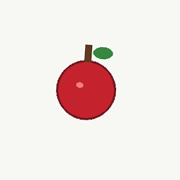
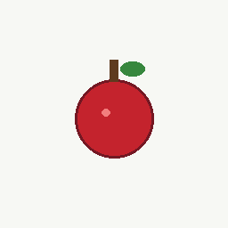
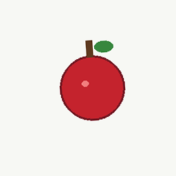
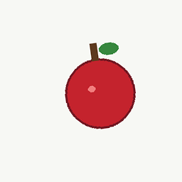
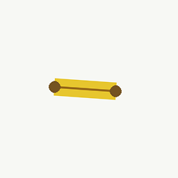
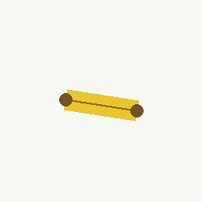
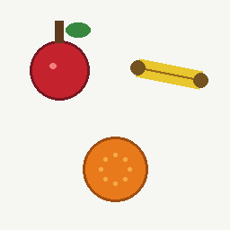
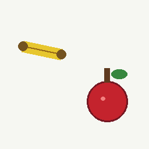
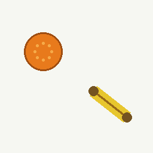
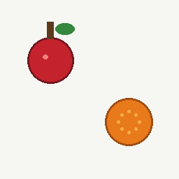

教学材料






AP 逐图输出
| 题目图 | 整图倾向 | 扫视过程 | 列举结果 | 计数 |
|---|---|---|---|---|
 probe_multi_0.png | orange ambigmargin 0.228 | tick 0: 看 bbox=(19, 6, 115, 129) -> apple tick 1: 看 bbox=(77, 137, 180, 240) -> orange tick 2: 看 bbox=(128, 57, 249, 108) -> banana tick 3: 看 bbox=None -> None tick 4: 看 bbox=None -> None tick 5: 看 bbox=None -> None tick 6: 看 bbox=None -> None tick 7: 看 bbox=None -> None | apple ambig 0.280orange soft 0.466banana ambig 0.306 | 3 |
 probe_multi_1.png | apple ambigmargin 0.149 | tick 0: 看 bbox=(135, 99, 234, 228) -> apple tick 1: 看 bbox=(15, 63, 130, 111) -> banana tick 2: 看 bbox=None -> None tick 3: 看 bbox=None -> None tick 4: 看 bbox=None -> None tick 5: 看 bbox=None -> None tick 6: 看 bbox=None -> None tick 7: 看 bbox=None -> None | apple soft 0.456banana ambig 0.300 | 2 |
 probe_multi_2.png | orange no_callmargin 0.060 | tick 0: 看 bbox=(27, 41, 118, 132) -> orange tick 1: 看 bbox=(133, 132, 236, 217) -> banana tick 2: 看 bbox=None -> None tick 3: 看 bbox=None -> None tick 4: 看 bbox=None -> None tick 5: 看 bbox=None -> None tick 6: 看 bbox=None -> None tick 7: 看 bbox=None -> None | orange soft 0.458banana soft 0.376 | 2 |
 probe_multi_3.png | apple ambigmargin 0.165 | tick 0: 看 bbox=(25, 14, 121, 137) -> apple tick 1: 看 bbox=(136, 126, 233, 223) -> orange tick 2: 看 bbox=None -> None tick 3: 看 bbox=None -> None tick 4: 看 bbox=None -> None tick 5: 看 bbox=None -> None tick 6: 看 bbox=None -> None tick 7: 看 bbox=None -> None | apple ambig 0.280orange soft 0.463 | 2 |
证明了什么
本阶段证明识别不再只是整图 label：候选区域先以 class-agnostic 方式进入 state_pool，再由视觉注意力动作选择焦点，最后在局部对象视野里重算 V7/V10/V11/V12 等特征。它仍不宣称真实世界照片识别完成，也不宣称 Zvec 或开放对话底座已完成。